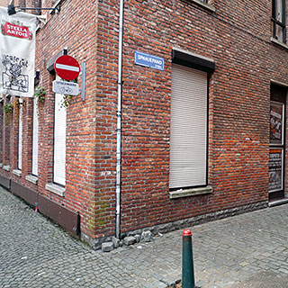

Café au Lait

Oude Beurs 8, Antwerp, 2000, Belgium http://www.cafe-au-lait.be/ 51.222106, 4.400051
Cosmopolitan funky bar with cocktails; the most fun we have had in Antwerp
Café au Lait is an unusually diverse, yet excellent bar in the centre of Antwerp, tucked away behind the main market square. It's the kind of bar that is closed during the afternoon (photo) and only gets going late in the evening, when it becomes the place to go for all manner of cocktails, beer, music and people.
The interesting thing about Café au Lait, which also explains its name if you speak French, is that it was specifically opened to cater for a mixed-race crowd, making it far more cosmopolitan than the average local bar, which isn’t. Apart from anything else, this makes it an excellent place to meet people if you are from out of town.
Although there are a few beers to choose from, this place is really about the cocktails, which are excellent. The cocktail menu is not huge, and we did not try the barman on random off-piste classics, but our Caipirina’s were certainly good.